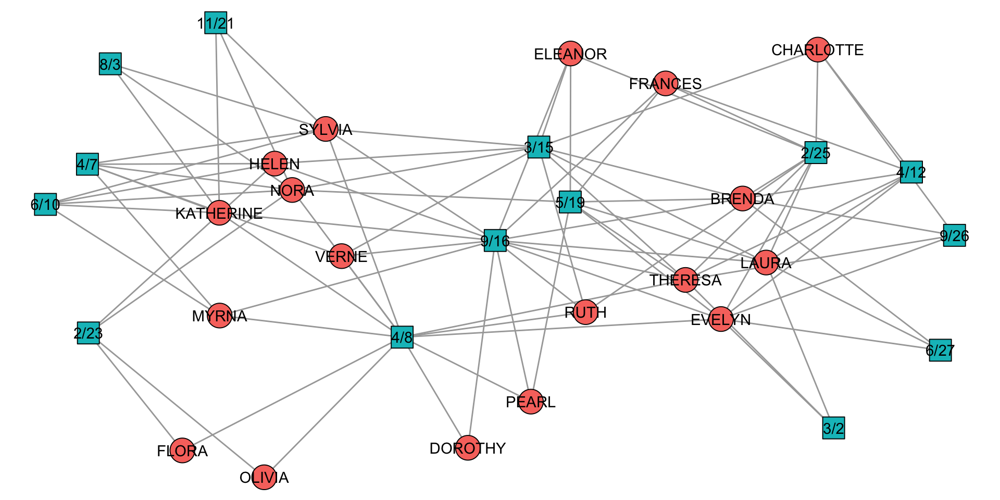
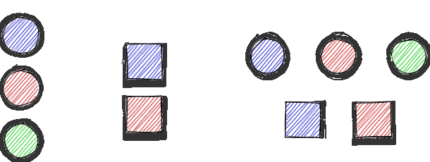
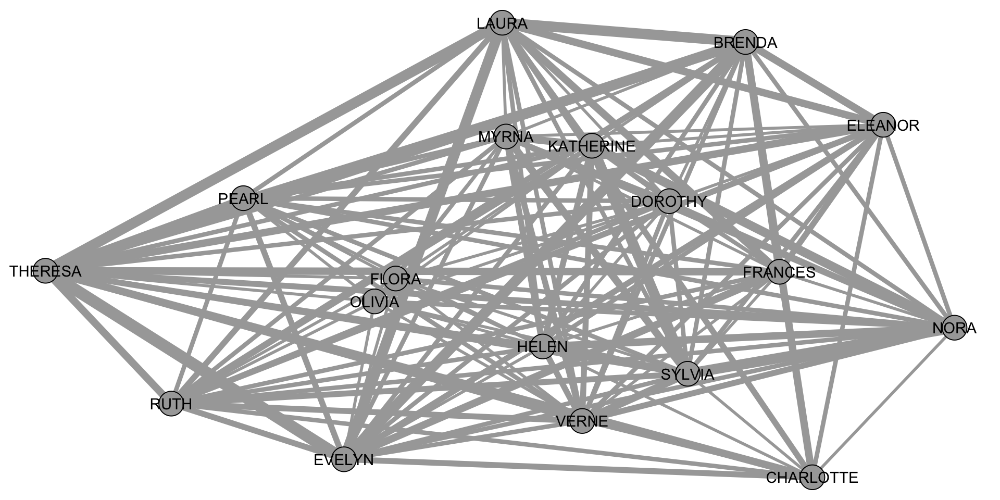
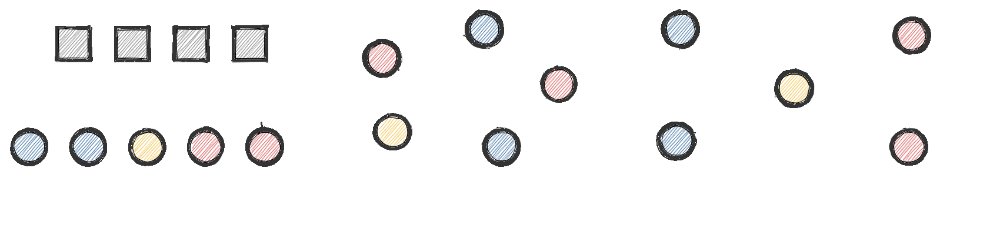
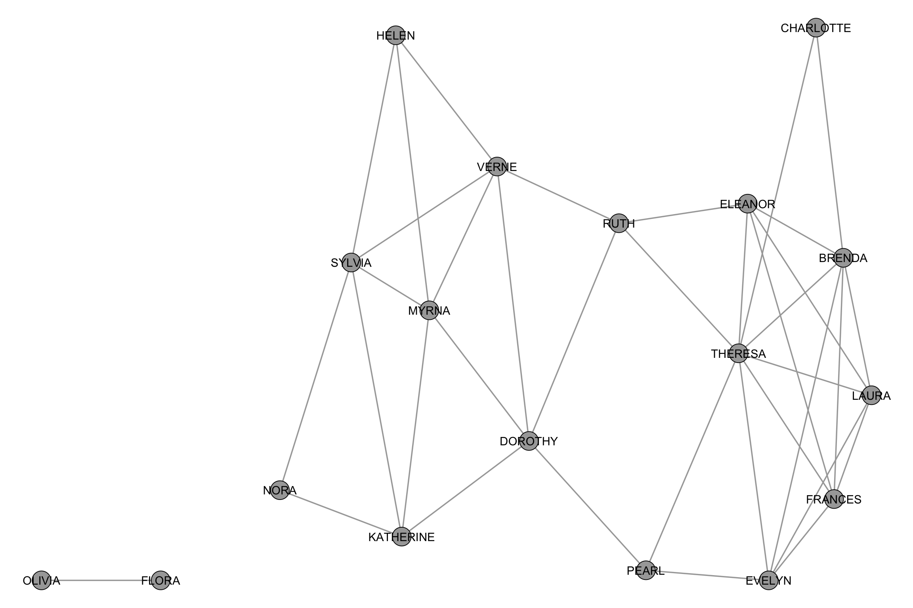
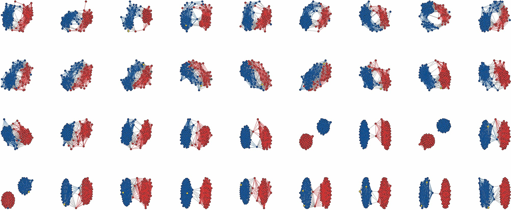
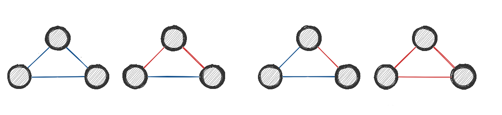
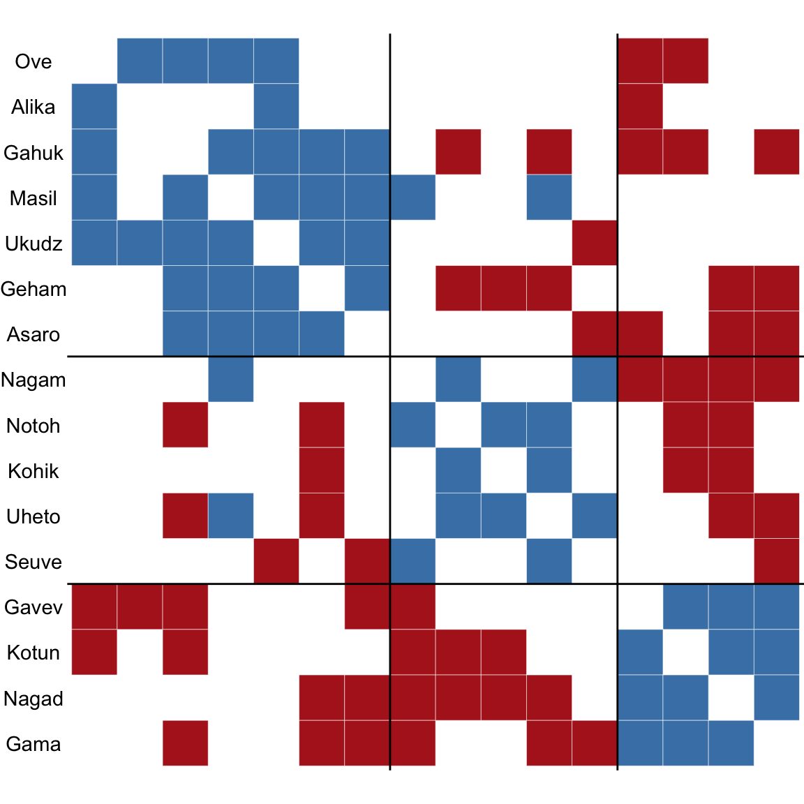
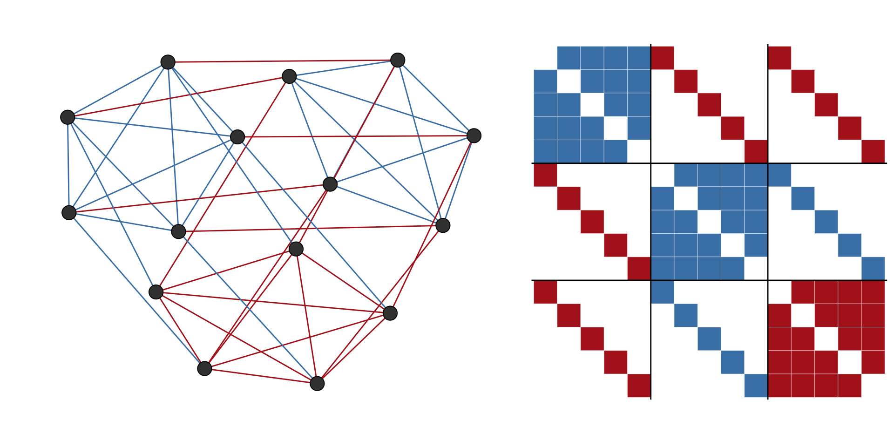

Beyond ‘Standard’ Networks
Social Network Analysis
Ego networks
Egocentric network data typically include at least three types of data
Ego-level attribute data
Alter-level attribute data
Alter-alter tie data
Ego networks in
In worksheet 5a we will use egor package for
- data import
- data manipulation
- network measures
- visualization
of egocentric networks
Two-mode networks
A two-mode network is a network that consists of two disjoint sets of nodes (like people and events)
Common examples include:
- Affiliation networks (Membership in institutions)
- Voting/Sponsorship networks (politicians and bills)
- Citation network (authors and papers)
- Co-Authorship networks (authors and papers)
Toy example
Analyzing two-mode networks
The adjacency matrix is called incidence matrix
A <- as_incidence_matrix(southern_women)
A[1:8, ]
#> 6/27 3/2 4/12 9/26 2/25 5/19 3/15 9/16 4/8 6/10 2/23 4/7 11/21 8/3
#> EVELYN 1 1 1 1 1 1 0 1 1 0 0 0 0 0
#> LAURA 1 1 1 0 1 1 1 1 0 0 0 0 0 0
#> THERESA 0 1 1 1 1 1 1 1 1 0 0 0 0 0
#> BRENDA 1 0 1 1 1 1 1 1 0 0 0 0 0 0
#> CHARLOTTE 0 0 1 1 1 0 1 0 0 0 0 0 0 0
#> FRANCES 0 0 1 0 1 1 0 1 0 0 0 0 0 0
#> ELEANOR 0 0 0 0 1 1 1 1 0 0 0 0 0 0
#> PEARL 0 0 0 0 0 1 0 1 1 0 0 0 0 0tnet and bipartite offer some methods to analyse two mode networks directly, by adapting tools for standard networks.
Projecting two-mode networks

Projecting two-mode networks
# Rows: People (P1, P2, P3), Columns: Events (E1, E2)
incidence_matrix <- matrix(c(
1, 0, # P1 attended E1
1, 1, # P2 attended E1 and E2
0, 1 # P3 attended E2
), nrow = 3, byrow = TRUE)
rownames(incidence_matrix) <- c("P1", "P2", "P3")
colnames(incidence_matrix) <- c("E1", "E2")
incidence_matrix
#> E1 E2
#> P1 1 0
#> P2 1 1
#> P3 0 1Projecting two-mode networks
Projecting two-mode networks
Can you do it by hand?
Projecting two-mode networks
A <- as_incidence_matrix(southern_women)
A[1:8, ]
#> 6/27 3/2 4/12 9/26 2/25 5/19 3/15 9/16 4/8 6/10 2/23 4/7 11/21 8/3
#> EVELYN 1 1 1 1 1 1 0 1 1 0 0 0 0 0
#> LAURA 1 1 1 0 1 1 1 1 0 0 0 0 0 0
#> THERESA 0 1 1 1 1 1 1 1 1 0 0 0 0 0
#> BRENDA 1 0 1 1 1 1 1 1 0 0 0 0 0 0
#> CHARLOTTE 0 0 1 1 1 0 1 0 0 0 0 0 0 0
#> FRANCES 0 0 1 0 1 1 0 1 0 0 0 0 0 0
#> ELEANOR 0 0 0 0 1 1 1 1 0 0 0 0 0 0
#> PEARL 0 0 0 0 0 1 0 1 1 0 0 0 0 0Projecting two-mode networks
Filtering projections

naïve
delete all edge with a weight less than x
advanced
statistical tools using null models: backbone
Introduction to the package
“Backbone” null models
Compare an edge’s observed weight in the projection to the distribution of weights expected in a projection obtained from a random bipartite network where both the row vertex degrees and column vertex degrees are …
Fixed degree sequence model
… exactly fixed at their original values
Stochastic degree sequence model
… approximately fixed at their original values
“Backbone” example
Application of projections
Co-voting behavior of US senators
Signed networks
Signed networks include two types of relations:
positive (“friends”) and negative (“foes”)
typical research questions involve (implemented in signnet):
- structural balance
- blockmodeling
- (centrality)
Structural balance theory

Beyond triangles
A network is balanced if it can be partitioned into two groups such that all intra group edges are positive and all inter group edges are negiative
Extended form of balance (Davis 1960s)
A network is balanced if it can be partitioned into k groups …
Toy example
Measuring structural balance
- triangles: Fraction of balanced triangles.
- walks: fraction of signed to unsigned walks
- frustration: optimal partition such that the sum of intra group negative and inter group positive edges is minimized
Blockmodeling
In signed blockmodeling, the goal is to determine \(k\) blocks of nodes such that all intra-block edges are positive and inter-block edges are negative
Blockmodeling

Generalized blockmodeling
The diagonal block structure is not always the most optimal representation of the data
Generalized blockmodeling
The function signed_blockmodel_general() allows to specify arbitrary block structures.
set.seed(424) #for reproducibility
blockmat <- matrix(c(1,-1,-1,-1,1,1,-1,1,-1),3,3,byrow = TRUE)
blockmat
#> [,1] [,2] [,3]
#> [1,] 1 -1 -1
#> [2,] -1 1 1
#> [3,] -1 1 -1
general <- signed_blockmodel_general(g,blockmat,alpha = 0.5)
traditional <- signed_blockmodel(g,k = 3,alpha = 0.5,annealing = TRUE)
c(general$criterion,traditional$criterion)
#> [1] 0 6Generalized blockmodeling

Other functions
Most functions us the igraph name + _signed:
as_adj_signed()as_incidence_signed()laplacian_matrix_signed()triad_census_signed()degree_signed()eigen_centrality_signed()sample_islands_signed()
All signed triads